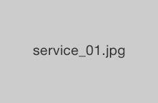
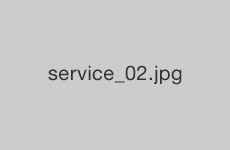

一般歯科とは、虫歯の治療をはじめ歯周病予防、歯槽膿漏の治療、歯の欠損部を補うことなどです。
治療方針を患者様に丁寧に説明し、ご理解いただいた上で治療する事を心がけています。
丁寧な説明と治療で、お口の健康をサポートします。

一般歯科とは、虫歯の治療をはじめ歯周病予防、歯槽膿漏の治療、歯の欠損部を補うことなどです。
治療方針を患者様に丁寧に説明し、ご理解いただいた上で治療する事を心がけています。
虫歯が進行している場合は麻酔をする必要がありますが、当院では痛みの少ない麻酔を取り入れています。詰め物は保険が適用されるものと適用外のものがありますので、治療前にご説明いたします。
口の中が臭う、歯茎から血が出るなどの症状が見られたらご来院ください。放っておくと、最後には歯が抜けてしまいます。また歯周病はさまざまな全身疾患にもつながります。
残っている歯を最大限に活用し、あなたのお口に合った入れ歯を作ります。また、これ以上歯を失わないためのブラッシング方法や入れ歯のケアの仕方なども指導します。
治療で痛い思いをしないように、虫歯や歯周病を毎日の歯磨きで予防しましょう。患者様にあったブラッシング方法をご提案しています。

審美歯科は歯や歯肉の病気を治すことが目的ではなく、もう一歩進んで、美しく健康な歯や歯肉を作ることを目的としています。
美しい歯によって笑顔が輝き、明るく自信に満ちた人生を過ごすことができるでしょう。
ホワイトニングの一番のメリットは、健康な歯を削ることなく白くできることです。歯の白さを持続させるためにはご自身のケアも大切なポイント。ブラッシングも指導いたします。
オールセラミックは、冠全体がセラミック(陶器)で出来ているクラウン（差し歯）のこと。非常に見た目がキレイで、「変色しない」「汚れが付きにくい」というメリットもあります。
インレーとは、虫歯の治療時に使う歯の詰め物のことです。セラミックインレーで治療をすると、 虫歯治療をしたことがわからないくらいにキレイに仕上がります。
プロフェッショナル・メカニカル・トゥース・クリーニング（Professional Mechanical Tooth Cleaning）の略称です。タバコのヤニや茶渋などの歯の表面に付いた汚れを取り除く方法です。